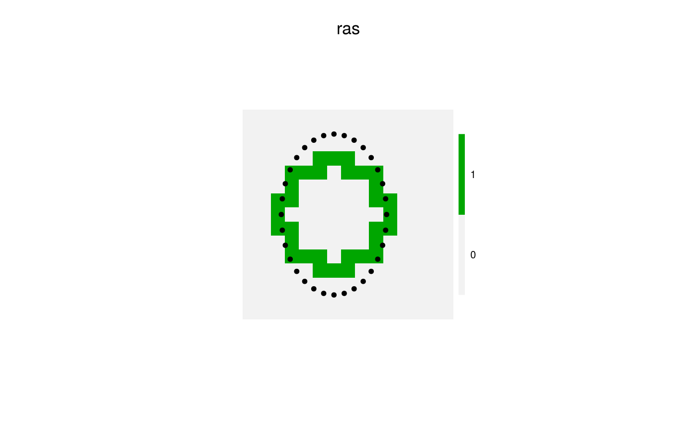
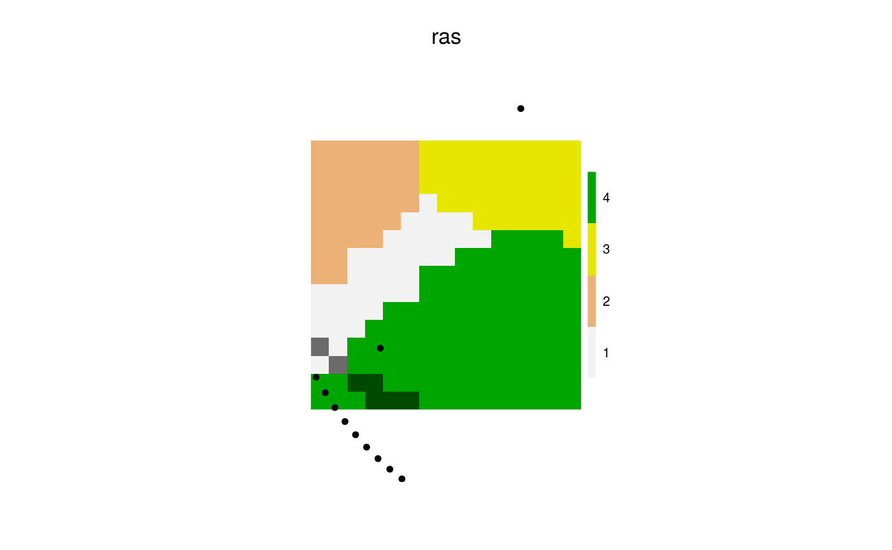
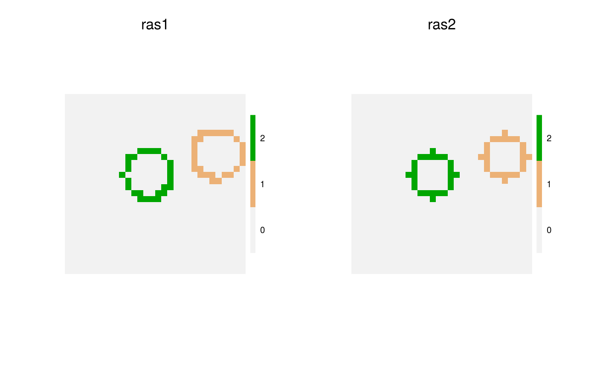

Identify pixels in a circle or ring (donut) around an object.
Identify the pixels and coordinates that are at a (set of) buffer distance(s)
of the objects passed into coords.
This is similar to rgeos::gBuffer but much faster and without
the geo referencing information.
In other words, it can be used for similar problems, but where speed is important.
This code is substantially adapted from PlotRegionHighlighter::createCircle.
cir(landscape, coords, loci, maxRadius = ncol(landscape)/4, minRadius = maxRadius, allowOverlap = TRUE, allowDuplicates = FALSE, includeBehavior = "includePixels", returnDistances = FALSE, angles = NA_real_, returnAngles = FALSE, returnIndices = TRUE, closest = FALSE, simplify = TRUE) # S4 method for RasterLayer,SpatialPoints,missing cir(landscape, coords, maxRadius, minRadius = maxRadius, allowOverlap, allowDuplicates, includeBehavior, returnDistances, angles, returnAngles, returnIndices, closest, simplify) # S4 method for RasterLayer,missing,numeric cir(landscape, loci, maxRadius, minRadius = maxRadius, allowOverlap, allowDuplicates, includeBehavior, returnDistances, angles, returnAngles, returnIndices, closest, simplify) # S4 method for RasterLayer,missing,missing cir(landscape, loci, maxRadius, minRadius = maxRadius, allowOverlap, allowDuplicates, includeBehavior, returnDistances, angles, returnAngles, returnIndices, closest, simplify) # S4 method for RasterLayer,matrix,missing cir(landscape, coords, loci, maxRadius = ncol(landscape)/4, minRadius = maxRadius, allowOverlap = TRUE, allowDuplicates = FALSE, includeBehavior = "includePixels", returnDistances = FALSE, angles = NA_real_, returnAngles = FALSE, returnIndices = TRUE, closest = FALSE, simplify = TRUE)
Arguments
| landscape | Raster on which the circles are built. |
|---|---|
| coords | Either a matrix with 2 (or 3) columns, x and y (and id), representing the
coordinates (and an associated id, like cell index),
or a |
| loci | Numeric. An alternative to |
| maxRadius | Numeric vector of length 1 or same length as coords |
| minRadius | Numeric vector of length 1 or same length as |
| allowOverlap | Logical. Should duplicates across id be removed or kept. Default TRUE. |
| allowDuplicates | Logical. Should duplicates within id be removed or kept. Default FALSE. This is useful if the actual x, y coordinates are desired, rather than the cell indices. This will increase the size of the returned object. |
| includeBehavior | Character string. Currently accepts only "includePixels", the default, and "excludePixels". See details. |
| returnDistances | Logical. If TRUE, then a column will be added to the returned
data.table that reports the distance from |
| angles | Numeric. Optional vector of angles, in radians, to use. This will create "spokes" outward from coords. Default is NA, meaning, use internally derived angles that will "fill" the circle. |
| returnAngles | Logical. If TRUE, then a column will be added to the returned
data.table that reports the angle from |
| returnIndices | Logical. Should the function return a |
| closest | Logical. When determining non-overlapping circles, should the function
give preference to the closest |
| simplify | logical. If TRUE, then all duplicate pixels are removed. This means that some x, y combinations will disappear. |
Value
A matrix with 4 columns, id, indices,
x, y. The x and y indicate the
exact coordinates of
the indices (i.e., cell number) of the landscape
associated with the ring or circle being identified by this function.
Details
This function identifies all the pixels as defined by a donut
with inner radius minRadius and outer radius of maxRadius. The includeBehavior defines
whether the cells that intersect the radii but whose centres are not inside
the donut are included includePixels or not excludePixels in the returned
pixels identified. If this is excludePixels, and if a minRadius and
maxRadius are equal, this will return no pixels.
See also
rings which uses spread internally.
cir tends to be faster when there are few starting points, rings
tends to be faster when there are many starting points. cir scales with
maxRadius ^ 2 and coords. Another difference
between the two functions is that rings takes the centre of the pixel
as the centre of a circle, whereas cir takes the exact coordinates.
See example. For the specific case of creating distance surfaces from specific
points, see distanceFromEachPoint, which is often faster.
For the more general GIS buffering, see rgeos::gBuffer.
Examples
library(data.table) library(sp) library(raster) library(quickPlot) set.seed(1642) # circle centred ras <- raster(extent(0, 15, 0, 15), res = 1, val = 0) middleCircle <- cir(ras) ras[middleCircle[, "indices"]] <- 1 circlePoints <- SpatialPoints(middleCircle[, c("x", "y")]) if (interactive()) { clearPlot() Plot(ras) Plot(circlePoints, addTo = "ras") }# circles non centred ras <- randomPolygons(ras, numTypes = 4) n <- 2 agent <- SpatialPoints(coords = cbind(x = stats::runif(n, xmin(ras), xmax(ras)), y = stats::runif(n, xmin(ras), xmax(ras)))) cirs <- cir(ras, agent, maxRadius = 15, simplify = TRUE) cirsSP <- SpatialPoints(coords = cirs[, c("x", "y")]) cirsRas <- raster(ras) cirsRas[] <- 0 cirsRas[cirs[, "indices"]] <- 1 if (interactive()) { clearPlot() Plot(ras) Plot(cirsRas, addTo = "ras", cols = c("transparent", "#00000055")) Plot(agent, addTo = "ras") Plot(cirsSP, addTo = "ras") }# Example comparing rings and cir a <- raster(extent(0, 30, 0, 30), res = 1) hab <- gaussMap(a, speedup = 1) # if raster is large (>1e6 pixels) use speedup > 1 radius <- 4 n <- 2 coords <- SpatialPoints(coords = cbind(x = stats::runif(n, xmin(hab), xmax(hab)), y = stats::runif(n, xmin(hab), xmax(hab)))) # cirs cirs <- cir(hab, coords, maxRadius = rep(radius, length(coords)), simplify = TRUE) # rings loci <- cellFromXY(hab, coordinates(coords)) cirs2 <- rings(hab, loci, maxRadius = radius, minRadius = radius - 1, returnIndices = TRUE) # Plot both ras1 <- raster(hab) ras1[] <- 0 ras1[cirs[, "indices"]] <- cirs[, "id"] ras2 <- raster(hab) ras2[] <- 0 ras2[cirs2$indices] <- cirs2$id if (interactive()) { clearPlot() Plot(ras1, ras2) }a <- raster(extent(0, 100, 0, 100), res = 1) hab <- gaussMap(a, speedup = 1) cirs <- cir(hab, coords, maxRadius = 44, minRadius = 0) ras1 <- raster(hab) ras1[] <- 0 cirsOverlap <- data.table(cirs)[, list(sumIDs = sum(id)), by = indices] ras1[cirsOverlap$indices] <- cirsOverlap$sumIDs if (interactive()) { clearPlot() Plot(ras1) }# Provide a specific set of angles ras <- raster(extent(0, 330, 0, 330), res = 1) ras[] <- 0 n <- 2 coords <- cbind(x = stats::runif(n, xmin(ras), xmax(ras)), y = stats::runif(n, xmin(ras), xmax(ras))) circ <- cir(ras, coords, angles = seq(0, 2 * pi, length.out = 21), maxRadius = 200, minRadius = 0, returnIndices = FALSE, allowOverlap = TRUE, returnAngles = TRUE)